Single-species size-spectrum dynamics
Source:vignettes/single_species_size-spectrum_dynamics.Rmd
single_species_size-spectrum_dynamics.RmdIntroduction
In this tutorial you will gain an understanding of size-spectrum dynamics. To separate the size-spectrum effects from the multi-species effects, we will concentrate on a single species in this tutorial.
Size-spectrum dynamics describes in detail how biomass is transported through the ecosystem from small sizes to large sizes. Thus the best way to think about size-spectrum dynamics is to think of traffic on a highway, except that instead of cars travelling along the road we have fish growing along the size axis, all the way from their egg size to their maximum size. Let us explore this analogy briefly.
The flow of traffic on a highway is dependent on the traffic density, which in turn is dependent on changes in the traffic velocity. High traffic density arises in sections of the road where the traffic velocity decreases. Such a decrease can lead to traffic jams. Low traffic density arises in sections where the velocity increases, as familiar when emerging on the other side of a traffic jam. Traffic jams are self-reinforcing phenomena: if there is a decrease in speed somewhere then the density of cars increases which causes a further decrease in speed, leading to an even higher density, and so on.
Similarly, high fish density arises in size classes where the growth rate decreases. A pronounced decrease in growth rate can lead to pronounced peaks in the fish density, similar to a traffic jam. Of course fish density is also controlled by the death rate, with a high death rate leading to a decreased fish density.
To be precise, fish density in a size class increases if the rate at which fish grow into the size class is larger than the rate at which they either grow out of the size class or die while they are in the size class. Thus size-spectrum dynamics is the result of the interplay between the death rate and the changes in the growth rate. For the mathematically minded, this interplay is expressed by the partial differential equation \[\frac{\partial}{\partial t}N(w,t) = -\frac{\partial}{\partial w}\big(N(w,t)g(w,t)\big) - \mu(w,t)\] where \(N(w,t)\) is the fish density at size \(w\) and time \(t\), \(g(w,t)\) is the growth rate of an individual of size \(w\) at time \(t\) and \(\mu(w,t)\) is its death rate. There is no need for you to understand the mathematical notation.
Size-spectrum dynamics is like the traffic on a highway where cars can leave the highway (fish can die) at any point, but they can only join the highway at its beginning (fish start out at the egg size). To model the size spectrum we therefore also have to describe the rate \(R(t)\) at which eggs are entering the size spectrum, i.e., the rate at which mature fish reproduce.
Below we will be discussing in detail what determines the death rate \(\mu(w,t)\), the growth rate \(g(w,t)\) and the rate of reproduction \(R(t)\).
Why study size-spectrum dynamics?
The study of traffic dynamics has had real practical benefits. For example, at least on motorways in Europe, when there is a danger of a traffic jam developing, automatic speed restrictions are imposed at a certain distance in front of the developing slow-moving traffic. For motorists who have not thought about traffic flow, these speed restrictions in places where there is no obvious reason for them are very annoying. However they do indeed avoid the formation of the traffic jam.
Of course we can not directly tell fish to obey limits to their growth rates. However we do have influence on their size-spectrum dynamics through fishing policy. For example if some species experiences stunted growth, like for example the Herring in the Baltic Sea, we could resolve that by reducing their numbers (which increases their growth rate because of reduced competition for food) or by reducing fishing on their prey.
The size-spectrum dynamics in a multi-species ecosystem is extremely complex. We can understand very simplified cases analytically, but in general we need to use numerical simulation to understand the consequences of various interventions.
The mizer package can simulate the size-spectrum dynamics. Given the model parameters that enter into the expression of the growth rate, the death rate and the reproductive rate, and an initial fish size spectrum, mizer simulates the changes in the size spectrum over time according to the above equations.
Of particular interest is the steady state of the size spectrum, where the effects of the death rate and the changes in the growth rate exactly balance in such a way that the size spectrum stays constant over time. We will be looking both at the steady state and at time-varying size spectra below.
Our emphasis will be on understanding the dynamics. We do not just want to learn how to run simulations but we want to use the simulations to develop an intuition for how fish populations behave. We therefore start with very simple models first.
A first example
The most effective way of working with this tutorial is to open up an R script file in RStudio and copying all the commands from this tutorial into that R script file. You should then execute them by sending them to the R console, thereby reproducing all the results. Later in this tutorial there will be exercises that you can do by adapting the code in your R script file to the tasks in the exercises. That way you will pick up a facility in working with mizer in R at the same time as gaining a deeper understanding of size spectrum modelling.
First, load some required packages with the following commands:
If you get error messages saying that a particular package is not available, you will need to install that package.
Mizer collects all the parameters describing a size-spectrum model
into one object of class MizerParams. You do not need to
set up this object by hand but instead there are several wrapper
functions in mizer that create the object for you for various types of
models, and also many functions for changing specific parameters in a
model. We will use the newSingleSpeciesParams() function to
set up a model describing a single fish species living in an ecosystem
whose community size spectrum is given by a power-law.
The newSingleSpeciesParams() function has many arguments
that allow you to specify parameters for the fish species as well as for
the community, but all these arguments have default values, so we can
simply call the function without specifying those arguments. We will
only specify the power-law exponent of the background community
params <- newSingleSpeciesParams(lambda = 2.05)The function returns a MizerParams object and we have
assigned that to the variable params. We will be explaining
more about this model as we go along.
Steady state spectrum
The params object also contains an initial size spectrum
that is close to the steady state of the model. The steady state is the
state where in each size class the inflow of individuals through growth
exactly balances the outflow of individuals through growth and death. If
we start close to the steady state then usually if we simulate the
size-spectrum dynamics for a while the population will evolve closer and
closer to the steady state.
To get to the steady state we use the steady() function.
The result of that function is again a MizerParams object but now with
an initial size spectrum that has evolved to be very close to the steady
state.
params <- steady(params)## Convergence was achieved in 1.5 years.We can plot the size spectrum with the plotSpectra()
function.
plotSpectra(params, power = 0)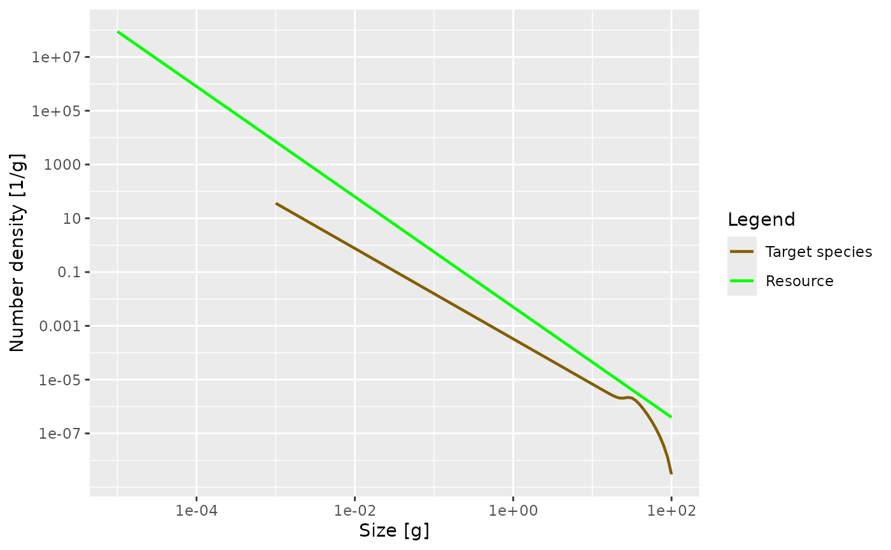
The power = 0 argument to the plotSpectra()
function specifies that we want to plot the number density, rather than
for example the biomass density.
The green line represents the number density of the background
community, labelled as “Resource” in the plot legend, in which our
foreground species finds itself. The green line is a straight line with
slope lambda = -2.05. It is important to understand that a
power-law curve looks like a straight line when plotted on logarithmic
axes and the slope of the line is the exponent in the power law. Thus
the number density is proportional to \(w^{-2.05}\).
The other line represents the number density of our single species, which by default is just named unimaginatively “Target species”. We see that it is a straight line initially, but then has a bump before declining rapidly at large sizes. We will discuss in a short while what causes that shape.
The initial slope of the species number density is negative, which means that there are fewer larger fish than smaller fish. That is of course understandable: some fish die while they are growing up, so there tend to be fewer fish in larger size classes.
Exercise 1
Now it is time for you to do the first exercise to use the commands you have just learned about. Create a MizerParams object describing a single species in a power-law background where the Sheldon exponent is 2.1. Assign that MizerParams object to a variable with a name other than
params, in order not to overwrite the MizerParams object that we created above. Then plot the number density as a function of weight in the steady state of that model. Once you are happy with your plot, you can continue reading. If you need to see the solution, you can click on the “Solution” triangle below.
Solution
params2 <- newSingleSpeciesParams(lambda = 2.1)
params2 <- steady(params2)## Convergence was achieved in 1.5 years.
plotSpectra(params2, power = 0)Numbers
While the plotSpectra() function gives us a plot of the
number density, it would be nice if we could get at the actual numbers.
The steady() function has stored those numbers as the
initial condition in the params object and we can access them with the
initialN() function. Let us assign this to a variable
n:
n <- initialN(params)As you can see in the “Environment” pane in RStudio, n
is a matrix with 1 row and 101 columns. The one row corresponds to the
one species. In a multispecies model there would be one row for each
species, holding the number density for that species. The 101 columns
are for the number densities in each of the 101 size classes. In fact,
n is a named array, i.e., each row and each column has
names. These we can extract with the dimnames()
function.
dimnames(n)## $sp
## [1] "Target species"
##
## $w
## [1] "0.001" "0.00112" "0.00126" "0.00141" "0.00158" "0.00178" "0.002"
## [8] "0.00224" "0.00251" "0.00282" "0.00316" "0.00355" "0.00398" "0.00447"
## [15] "0.00501" "0.00562" "0.00631" "0.00708" "0.00794" "0.00891" "0.01"
## [22] "0.0112" "0.0126" "0.0141" "0.0158" "0.0178" "0.02" "0.0224"
## [29] "0.0251" "0.0282" "0.0316" "0.0355" "0.0398" "0.0447" "0.0501"
## [36] "0.0562" "0.0631" "0.0708" "0.0794" "0.0891" "0.1" "0.112"
## [43] "0.126" "0.141" "0.158" "0.178" "0.2" "0.224" "0.251"
## [50] "0.282" "0.316" "0.355" "0.398" "0.447" "0.501" "0.562"
## [57] "0.631" "0.708" "0.794" "0.891" "1" "1.12" "1.26"
## [64] "1.41" "1.58" "1.78" "2" "2.24" "2.51" "2.82"
## [71] "3.16" "3.55" "3.98" "4.47" "5.01" "5.62" "6.31"
## [78] "7.08" "7.94" "8.91" "10" "11.2" "12.6" "14.1"
## [85] "15.8" "17.8" "20" "22.4" "25.1" "28.2" "31.6"
## [92] "35.5" "39.8" "44.7" "50.1" "56.2" "63.1" "70.8"
## [99] "79.4" "89.1" "100"The names of the columns are the weight in grams at the start of each size class. Notice how R displays long vectors by breaking them across many lines and starting each line with a number in brackets. That number is the index of the first value in that row. So for example we see that the 61st size bracket starts at 1 gram. The number density in the size class between 1 gram and 1.12 grams is
n[1, 61]## [1] 0.0003282314It is important to realise that this is not the number of fish in the
size class, but the number density. To get the number of fish we have to
multiply the number by the width of the size class. Those widths can be
obtained with the dw() function. So the number of fish in
the 61st size class is
(n * dw(params))[1, 61]## [1] 4.005029e-05You may be surprised by the small number if you interpret it as the number of fish between 1 gram and 1.12 gram in the entire ocean. However it looks more reasonable if it is the average number per square meter of sea. For more of a discussion of this issue of working with numbers per area, numbers per volume or numbers for the entire system see https://sizespectrum.org/mizer/reference/setParams.html#units-in-mizer
Exercise 2
Determine the total number of fish with sizes between 10 grams and 20 grams. You can use the
sum()function to add together contributions from the various size classes.
Biomass spectra
Without the power argument (or with
power = 1 which is the default) the
plotSpectra() function plots the biomass density as a
function of size.
plotSpectra(params)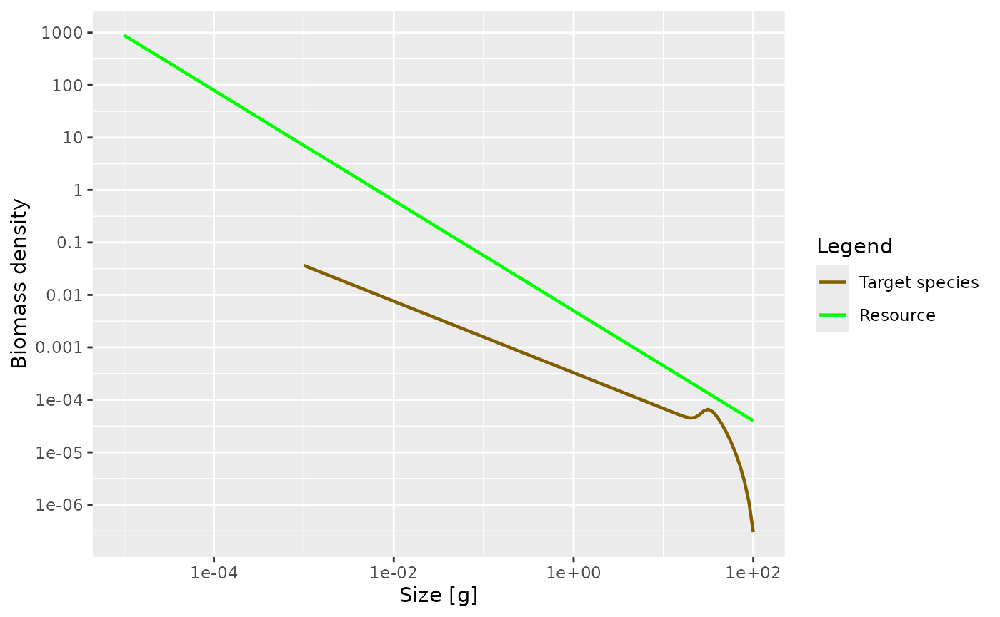
Now the green line representing the biomass density of the background has a slope of -1.05.
The initial slope of the species biomass density is negative, meaning that the biomass density decreases with size. This means that even though the individual fish of course gain biomass as they grow up, there is so much death among the larvae and juvenile fish that the total biomass of any cohort nevertheless decreases as it grows up. We will explain the reason for this later when we discuss predation mortality.
We can also plot the Sheldon spectrum, i.e., the biomass density as a
function of the log weight instead of the weight, by supplying the
argument power = 2 to plotSpectra().
plotSpectra(params, power = 2)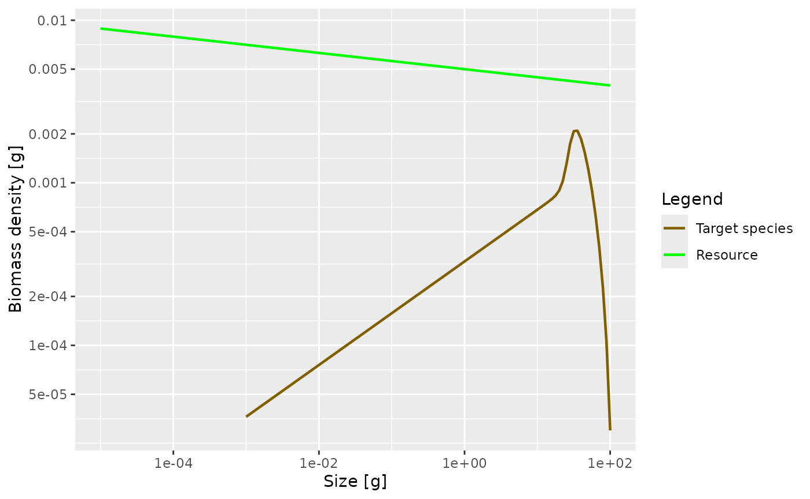
This now shows an approximately constant biomass density as a function of log size (the slope of the green line is -0.05). The biomass density of the species as a function of log size initially increases. So if binned in logarithmically-sized bins the biomass in each bin will initially increase, until it starts decreasing close to the maximum size of the species.
It may have been a bit confusing that we displayed the same size spectrum in three different ways. But it is important to be aware of this because in the literature you will see all different conventions being used, so if you see a plot of a size spectrum you always need to ask yourself exactly which density is being shown.
We can obtain the biomass density in a size class from the number
density by multiplying the number density by the weight of the
individuals in the size class. To obtain these weights, we use the
function w() that returns the weights at the start of each
size class. Of course using these will lead to a discretisation error
because not all fish in the size class have the same weight, but with
the small size classes that we use in mizer, the error is not too
important. So we calculate
biomass_density <- n * w(params)The total biomass in each size class we obtain by multiplying the biomass density in each size class by the width of each size class
biomass <- biomass_density * dw(params)For example the biomass of fish between 1 gram and 1.12 grams is
biomass[61]## [1] 4.005029e-05Next we will discuss the shape of the species size-spectrum in more detail.
Allometric rates
The first striking feature of the species size-spectrum, in all its representations, is that for small fish (larvae and juveniles) it is given by a straight line. This is due to the allometric scaling of the physiological rates, which we will discuss in this section. The other striking feature is the bulge at around maturity size, which we will discuss in the section on reproduction.
First of all, the metabolic rate, i.e., the rate at which an organism expends energy on its basic metabolic needs, scales as a power of the organism’s body size, and the power is about \(p = 3/4\).
Because this energy needs to be supplied by consumption of food, it is natural to assume that also the consumption rate scales allometrically with a power of \(n = 3/4\). When the consumption is greater than the metabolic cost then the excess leads to growth. Hence the growth rate too scales allometrically with power \(n = 3/4\). While these are standard choices for the allometric exponents, mizer allows you to choose other values for \(p\) and \(n\).
Finally, the death rate of organisms tends to scale allometrically with a power of \(p - 1 = 3/4 - 1 = -1/4\). The death rate experienced by larger individuals is smaller than that of small individuals. Again this is confirmed by many observations.
It is a result of the mathematics that if the growth and death rates scale allometrically with exponents \(p\) and \(1-p\) respectively, for some metabolic exponent \(p\), that the number density at steady state is also a power law, i.e., a straight line on the log-log plot.
Let us check that in our model the physiological rates are indeed
power laws, at least for the small sizes. We can get the growth rate
with the getEGrowth() function. We assign the result to a
variable that we name growth_rate.
growth_rate <- getEGrowth(params)You can again see in the “Environment” pane that this is a matrix with one row for the one species and 101 columns for the 101 size classes. So for example the growth rate at size 1 gram is
growth_rate[1, 61]## [1] 8.26968(because we had seen that the 61st size class starts at 1 gram). This is the instantaneous per-capita growth rate, measured in grams per year.
We would like to make a log-log plot of the growth rate against size
to check that it gives a straight line. We will use
ggplot() for that purpose. ggplot() likes to
work with data frames instead of named matrices, so we first convert the
matrix into a data frame with the melt() function.
growth_rate_frame <- melt(growth_rate)You can see in the “Environment” pane that the new variable that we
called growth_rate_frame is a data frame with 101
observations of 3 variables. The 101 observations correspond to the 101
size classes. The 3 variables have names
names(growth_rate_frame)## [1] "sp" "w" "value"They are the species sp, the size w, and
the value which contains the growth_rate. This data frame
we can pass to ggplot().
p <- ggplot(growth_rate_frame) +
geom_line(aes(x = w, y = value)) +
scale_x_log10() +
scale_y_log10() +
labs(x = "Weight [g]",
y = "Growth rate [g/year]")
pNote how we linked the x axis to the w variable and the
y axis to the value variable and specified that both axes
should be on a logarithmic scale.
We see that at least up to a size of a few grams the line is straight. Let’s isolate the growth rate for those smaller sizes
g_small_fish <- filter(growth_rate_frame, w <= 10)and fit a linear model
##
## Call:
## lm(formula = log(g_small_fish$value) ~ log(g_small_fish$w))
##
## Coefficients:
## (Intercept) log(g_small_fish$w)
## 2.113 0.750The slope of the line is indeed \(0.75 = 3/4\). In fact, the above shows that for juveniles \[\log(g(w)) = 2.113 + \frac34 \log(w)\] and thus \[g(w) = g_0\ w^p = 2.113\ w^{3/4}.\]
Of course in a real model, the growth rate would not so exactly follow a power law, due to variations in the growth rate due to variations in food availability, for example.
Exercise 3
Now over to you. Do exercise 3 in the exercise notebook. Use the methods you have just seen to make a log-log plot of the mortality rate. You can get the mortality rate with the
getMort()function. While adjusting the code to this new task, you need to take into account that the name of the size-dimension of the array returned bygetMort()is"w_prey"instead of"w".
Solution
mort_rate_frame <- melt(getMort(params))
p <- ggplot(mort_rate_frame) +
geom_line(aes(x = w_prey, y = value)) +
scale_x_log10() +
scale_y_log10() +
labs(x = "Weight [g]",
y = "Growth rate [g/year]")
p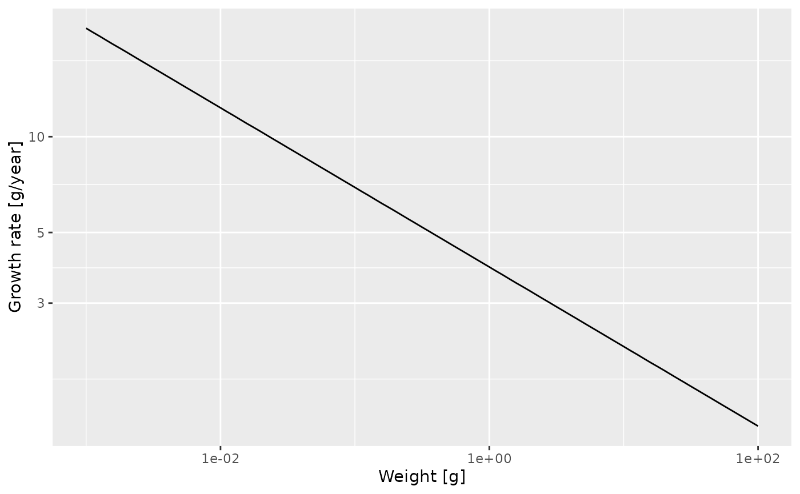
Then fit a linear model to determine the slope and and intercept and thus the allometric exponent and the coefficient for the mortality rate, to establish that the mortality rate is \[\mu(w) = \mu_0\ w^{p-1} = 2.038 \ w^{-1/4}.\]
Slope of juvenile spectrum
We have seen that for juvenile fish the growth rate and the death rate are both power laws with exponents \(p=3/4\) and \(p-1=-1/4\) respectively. By solving a differential equation we can derive that the juvenile spectrum also follows a power law: \[N(w) = N_0\ w^{-\mu_0/g_0 - p}\]
I won’t do the maths here with you (and you probably don’t want me to
anyway), but we can check this claim numerically. Let’s look at the
spectrum up to 10 grams. By now we know how to do this. We first convert
the number density matrix n into a dataframe and then
filter out all observations that do not have \(w\leq 10\). The resulting data frame we
pass to ggplot() and ask it to plot a line on log-log
axes.
nf <- melt(n) %>%
filter(w <= 10)
ggplot(nf) +
geom_line(aes(x = w, y = value)) +
scale_x_log10() +
scale_y_log10() +
labs(x = "Weight [g]",
y = "Number density [1/g]")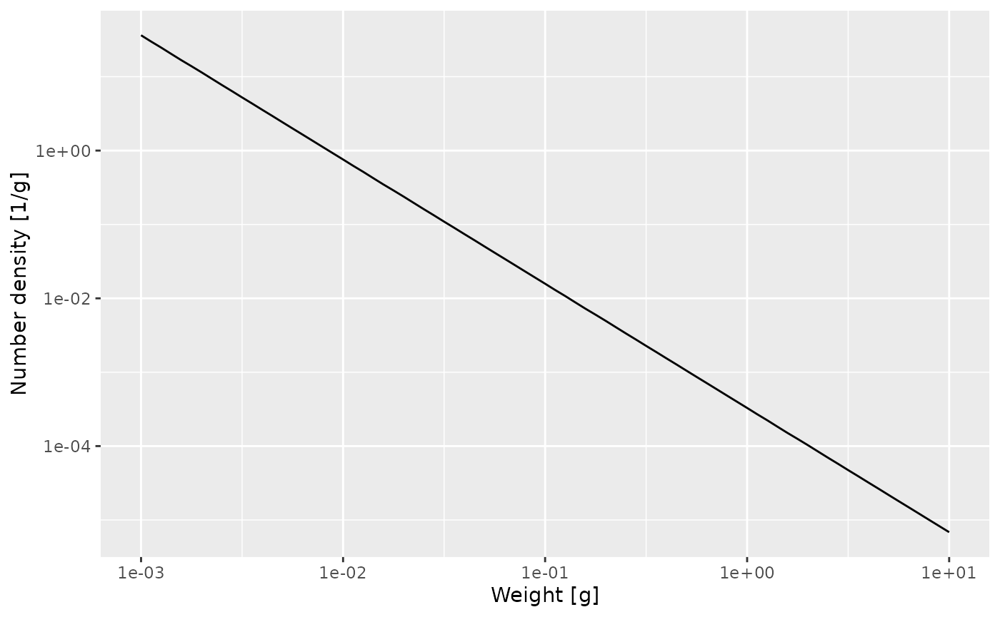
That confirms what we had seen earlier, that for fish less than 10 grams the number density is a power law. To determine the exponent of the power law we need the slope of that straight line in the log-log plot, and the easiest way to do that is to fit a linear model to the log variables:
##
## Call:
## lm(formula = log(nf$value) ~ log(nf$w))
##
## Coefficients:
## (Intercept) log(nf$w)
## -8.022 -1.682The linear model fit says that the exponent is -1.682. The mathematics claimed that the exponent should be \(-\mu_0 / g_0 - p\). We have already observed that \(\mu_0 = 2.038\) and \(g_0 = 2.113\) so we get
-m0 / g0 - 3/4## [1] -1.714505That is not quite the result of the linear model fit, but that is the nature of numerical calculations: one gets discretisation errors and rounding errors.
Shape of adult spectrum
Now that we understand the shape of the size spectrum for the juvenile fish, let us try to understand the bulge that follows. The increase of abundance that we see at around the maturity size of our species is due to a drop in growth rate at that size. This in turn is due to the fact that the mature fish invests some of its energy income into reproduction.
Investment into reproduction
Let us look at a plot of the proportion of the available energy that is invested into reproduction as a function of the size
psi <- melt(getMaturityProportion(params) * getReproductionProportion(params))
ggplot(psi) +
geom_line(aes(x = w, y = value)) +
labs(x = "Weight [g]",
y = "Proportion invested into reproduction")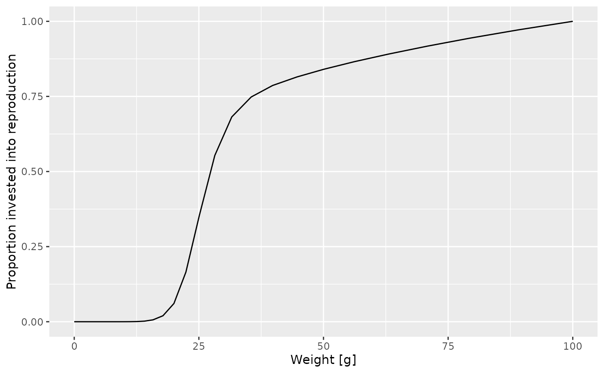
How was this maturity curve specified? You can find the details in the mizer documentation. There are four species parameters involved:
- the maturity size
w_matat which 50% of the individuals are mature. - the size
w_mat25at which 25% of the individuals are mature. - the asymptotic size
w_infat which an organism invests 100% of its income into reproduction and thus growth is zero. - an exponent
mthat determines how the proportion that an individual invests into reproduction scales with its size.
Such species parameters are contained in a data frame inside the
params object that we can access with the
species_params() function.
species_params(params)## species w_min w_inf w_mat w_min_idx k_vb gamma
## Target species Target species 0.001 100 25.11886 1 1 4067.903
## ks f0 fc beta sigma z0 alpha erepro
## Target species 5.906914 0.6 0.25 100 1.3 0 0.4 0.899483
## interaction_resource n p q pred_kernel_type h k
## Target species 1 0.75 0.75 0.8 lognormal 59.06914 0
## w_mat25 m R_max
## Target species 22.50546 1 InfAs you can see, there are a lot of other species parameters, some of which we will talk about later. For now let’s just select the 4 parameters we are interested in.
select(species_params(params), w_mat, w_mat25, w_inf, m)## w_mat w_mat25 w_inf m
## Target species 25.11886 22.50546 100 1Effect of change in maturity curve
Let us investigate what happens when we change the maturity curve.
Let’s assume the maturity size is actually 40 grams and the size at
which 25% of individuals is mature is 30 grams. Let us change the values
in the species_params data frame. But first we make a copy
of the params object so that we can keep the old version around
unchanged.
params_changed_maturity <- paramsIn this copy we now change the species parameters
species_params(params_changed_maturity)$w_mat <- 40
species_params(params_changed_maturity)$w_mat25 <- 30
select(params_changed_maturity@species_params, w_mat, w_mat25, w_inf, m)## w_mat w_mat25 w_inf m
## Target species 40 30 100 1Now the maturity curve has changed, which we can verify by plotting it
psi_changed_maturity <- melt(getMaturityProportion(params_changed_maturity) *
getReproductionProportion(params_changed_maturity))
ggplot(psi_changed_maturity) +
geom_line(aes(x = w, y = value)) +
labs(x = "Weight [g]",
y = "Proportion invested into reproduction")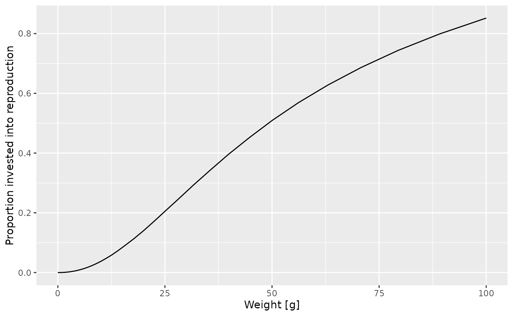
At this point let’s take a little break and learn how to draw two curves in the same graph. How can we see the old maturity curve and the new maturity curve in the same plot? First we add an extra column to each dataframe describing it
psi$type = "original"
psi_changed_maturity$type = "changed"Then we bind the two data frames together
psi_combined <- rbind(psi, psi_changed_maturity)and send that combined data frame to ggplot()
ggplot(psi_combined) +
geom_line(aes(x = w, y = value, colour = type)) +
labs(x = "Weight [g]",
y = "Proportion invested into reproduction")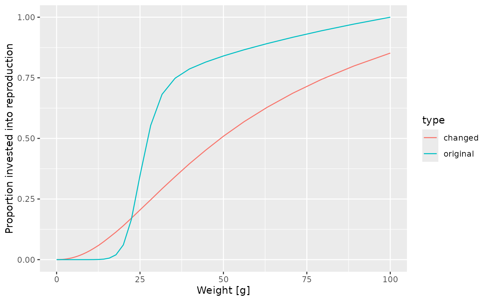
This change in the maturity curve of course implies a change in the growth rates.
Exercise 4
Make a plot showing the growth rates of the original model and of the model with the changed maturity curve.
Solution
growth_rate_frame_changed <- melt(getEGrowth(params_changed_maturity))
growth_rate_frame$type <- "original"
growth_rate_frame_changed$type <- "changed"
growth_rate_frame_combined <- rbind(growth_rate_frame,
growth_rate_frame_changed)
ggplot(growth_rate_frame_combined) +
geom_line(aes(x = w, y = value, colour = type)) +
labs(x = "Weight [g]",
y = "Growth rate [g/year]")Next let us look at how the steady state spectrum has changed. We first need to run the changed model to steady state
params_changed_maturity <- steady(params_changed_maturity)## Convergence was achieved in 6 years.We use the same technique as above to plot the steady-state spectra of both models on top of each other.
nf <- melt(initialN(params))
nf_changed_maturity <- melt(initialN(params_changed_maturity))
nf$type <- "original"
nf_changed_maturity$type <- "changed"
nf_combined <- rbind(nf, nf_changed_maturity)
ggplot(nf_combined) +
geom_line(aes(x = w, y = value, colour = type)) +
scale_x_log10() +
scale_y_log10() +
labs(x = "Weight [g]",
y = "Number density [1/g]")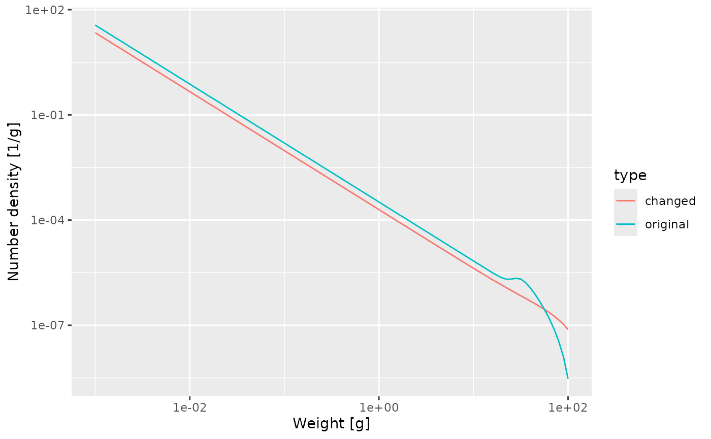
As expected, the bump happens later due to the larger maturity size and it is less pronounced, because the maturity curve is less steep.
Reproductive efficiency
So what happens with the energy that is invested into reproduction? It leads to spawning and thus the influx of new individuals at the egg size. This conversion of energy invested into reproduction into egg biomass is inefficient. Firstly much energy is spent on things like migration to spawning grounds, rather than on production of gonadic mass. Secondly, only a small proportion of eggs that are produced are viable and hatch into larvae.
In order for the population to be at steady state, the reproductive
efficiency has to have a particular value. If it were higher, the
population would increase, if it was lower, the population would
decrease with time. The steady() function has set the
reproductive efficiency to just the right value to maintain the
population level and has stored it in the species parameter called
erepro.
species_params(params)$erepro## [1] 0.899483The model with the changed maturity curve leads to a different rate of investment into reproduction and thus needs a slightly different reproductive efficiency to remain at steady state:
species_params(params_changed_maturity)$erepro## [1] 0.8894015This is the reproductive efficiency at steady state. When the population deviates from the steady state, for example due to a change in fishing, the reproductive efficiency can be set to change according to a Beverton-Holt stock-recruitment curve. We will discuss this again later.
Predation
It is now time to discuss the important issue of predation. It is through predation that the fish obtains the energy it needs to maintain its metabolism, to grow and to invest in reproduction. So it is important how we model this predation.
Effect of prey availability
The energy income for a fish comes from predation on its prey. If there is less prey, the fish consumes less and thus its growth rate will decrease. Let us investigate this by artificially removing some prey.
Below we decrease the community spectrum by a factor of 10 in the size range from 1mg to 10mg. We again create a new parameter object to be able to keep the old one around
params_starved <- params
size_range <- w_full(params) > 10^-3 & w_full(params) < 10^-2
initialNResource(params_starved)[size_range] <-
initialNResource(params)[size_range] / 10That is of course quite a dramatic intervention, and so should allow us to clearly see its effect on the steady-state size distribution of our species.
params_starved <- steady(params_starved)## Convergence was achieved in 6 years.## Warning in setBevertonHolt(params, reproduction_level = old_reproduction_level):
## The following species require an unrealistic reproductive efficiency greater
## than 1: Target species
plotSpectra(params_starved, power = 2)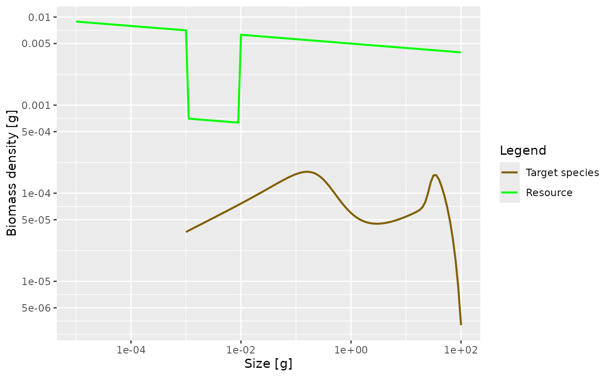
As expected, the lack of food and the resulting slow-down in growth leads to a traffic jam: a peak in the biomass density. This slow-down occurs at a size that is about a factor of 100 larger than the size at which food is reduced. Why this is we will discuss in the next section. But first investigate what happens when the prey abundance is increased instead of decreased.
Exercise 5
Plot the steady state biomass density in our model when the community abundance is increased by a factor of 10 in the size range from 1mg to 10mg.
Solution
params_overfed <- params
size_range <- w_full(params) > 10^-3 & w_full(params) < 10^-2
initialNResource(params_overfed)[size_range] <-
initialNResource(params)[size_range] * 10
params_overfed <- steady(params_overfed)## Convergence was achieved in 4.5 years.
plotSpectra(params_overfed, power = 2)How predation is modelled
The easiest case in which to understand predation is to imagine a filter feeding fish, swimming around with its mouth open. Clearly the amount of food it takes in is determined by four things:
- the density of prey in the water,
- how much volume of water the fish is able to filter, which will depend on how fast it swims as well as on its gape size.
- what sizes of prey the fish is able to filter out of the water, which will be limited by its gape size and by how fine its gill rakers are,
- how fast it can digest the food. If it can filter the prey faster than it can digest, it will have to start letting prey go uneaten.
For a more active hunter the situation will be similar. The rate at which it predates will depend on four things:
- the density of prey in the water
- the volume of water that the fish patrols and in which it will be able to seek out its prey. This may depend on things like radius of vision.
- which of this detected prey the fish is able to catch, which will depend on its mouth size but also on its agility and skill as well as on the defensive mechanisms of the prey.
- how fast it can digest the food.
Of these four factors, we have of course already been discussing the density of prey. In the next section we will discuss the ability to filter out or catch prey of particular sizes, which we model via the predation kernel. In the section after that we will discuss the search volume and then in the following section the maximum consumption rate.
The predation kernel
Fish will be particularly good at catching prey in a specific range
of sizes, smaller than themselves. This is encoded in the size-spectrum
model by the predation kernel. Let us take a look at the predation
kernel in our model. We can obtain it with the function
getPredKernel().
pred_kernel <- getPredKernel(params)This is a large three-dimensional array (predator species x predator size x prey size). We extract the kernel of a predator of size 10g (using that we remember that this is in size class 81)
pred_kernel_10 <- pred_kernel[, 81, , drop = FALSE]The drop = FALSE option is there to prevent R from
dropping any of the array dimensions. We can now plot this as usual
ggplot(melt(pred_kernel_10)) +
geom_line(aes(x = w_prey, y = value)) +
scale_x_log10()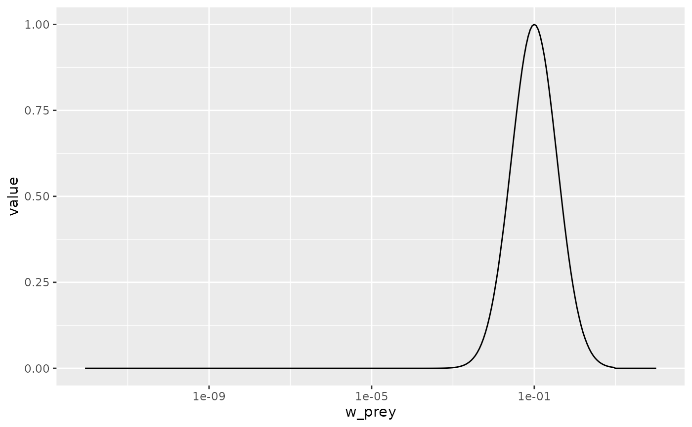
We see that the predator of size 10g likes to feed on prey that is
about a factor 100 smaller than itself, but also feeds on other sizes,
just with reduced preference. The preferred predator/prey size ratio is
determined by the species parameter beta and the width of
the feeding kernel, i.e., how fussy the predator is regarding their prey
size, is determined by the species parameter sigma. In our
model these have the values
select(species_params(params), beta, sigma)## beta sigma
## Target species 100 1.3Let us change the preferred predator/prey mass ratio from 100 to 1000. As usual, we first create a copy of the parameter object, then we make the change in that copy.
params_pk <- params
species_params(params_pk)$beta <- 1000Let’s make a plot to see that the predation kernel has indeed changed.
getPredKernel(params_pk)[, 81, , drop = FALSE] %>%
melt() %>%
ggplot() +
geom_line(aes(x = w_prey, y = value)) +
scale_x_log10()If we now again reduce the prey in the size range from 1mg to 10mg as before, we now expect this to produce a peak in the biomass spectrum somewhere between 1g and 10g. Let’s check.
initialNResource(params_pk) <- initialNResource(params_starved)
params_pk <- steady(params_pk)## Convergence was achieved in 4.5 years.## Warning in setBevertonHolt(params, reproduction_level = old_reproduction_level):
## The following species require an unrealistic reproductive efficiency greater
## than 1: Target species
plotSpectra(params_pk, power = 2)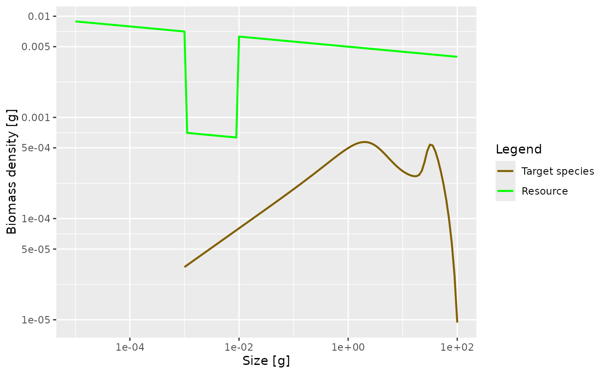
Yes, as expected.
For details of how beta and sigma
parametrise the predation kernel, see https://sizespectrum.org/mizer/reference/lognormal_pred_kernel.html#details.
For information on how to change the predation kernel, see https://sizespectrum.org/mizer/reference/setPredKernel.html#setting-predation-kernel
It is very important not to confuse the prey preference with the diet. Just because a predator might prefer to feed on prey of a particular size if it had free choice does not mean that it actually feeds predominantly on such prey. The actual diet of the fish depends also on the availability of prey. Because smaller prey are more abundant, the realised predator/prey mass ratio in the diet will be smaller than the preferred predator/prey mass ratio. This is particularly important when estimating the predation kernel from stomach data.
Exercise 6
Change the parameters of the predation kernel to
beta = 50andsigma = 2and plot the predation kernel of a predator of size 1g. You should see that the predation kernel is truncated so that the predator never feeds on prey larger than themselves.
Solution
params3 <- params
species_params(params3)$beta <- 50
species_params(params3)$sigma <- 2
getPredKernel(params3)[, 61, , drop = FALSE] %>%
melt() %>%
ggplot() +
geom_line(aes(x = w_prey, y = value)) +
scale_x_log10()Next, plot the steady state arising with this feeding kernel when the prey abundance is artificially reduced by a factor of 10 in the size range between 1mg and 10mg as in previous examples. What do you observe? Are you surprised?
Solution
initialNResource(params3) <- initialNResource(params_starved)
params3 <- steady(params3)## Convergence was achieved in 4.5 years.
plotSpectra(params3, power = 2)Search volume
Next we consider the factor that models the volume of water a filter feeder is able to filter in a certain amount of time, or the volume of water a forage fish is able to patrol in a certain amount of time. This is difficult to model from first principles, although people have tried to argue in terms of swimming speeds of fish. We assume that this search volume rate is also an allometric rate. Let \(\gamma(w)\) denote this rate for a predator of size \(w\). Thus we assume that \[\gamma(w) = \gamma_0\ w^q\] for some exponent \(q\). We know that a fish needs to consume prey at a rate that scales with its body size to the power \(p\), with \(p\) about \(3/4\). We also know that the prey density will be approximately described by the Sheldon power law, i.e., that \(N(w) = N_0\ w^{-\lambda}\). A bit of maths then says that \[q = 2 - \lambda + n.\] This explains the message you got when you created the params object with a certain choice of \(\lambda\): mizer chose the search volume exponent automatically according to this formula. In the real world, evolution will have made sure that the fish will have developed a feeding strategy that allows it to cover its metabolic costs, and thus leads to that search volume exponent of \(q\). Clearly, filter feeders have taken a very different route to this than forage fish, but the result is the same.
Let us see what effect changing the coefficient \(\gamma_0\) in the search volume rate has. Its current value in our model is
species_params(params)$gamma## [1] 4067.903We change that to 2000 and find the new steady state.
params_new_gamma <- params
species_params(params_new_gamma)$gamma <- 2000
params_new_gamma <- steady(params_new_gamma)## Warning in setBevertonHolt(params, reproduction_level = old_reproduction_level):
## The following species require an unrealistic reproductive efficiency greater
## than 1: Target speciesWe can see the effect in the growth curve of our species. In the original model it looks as follows:
plotGrowthCurves(params)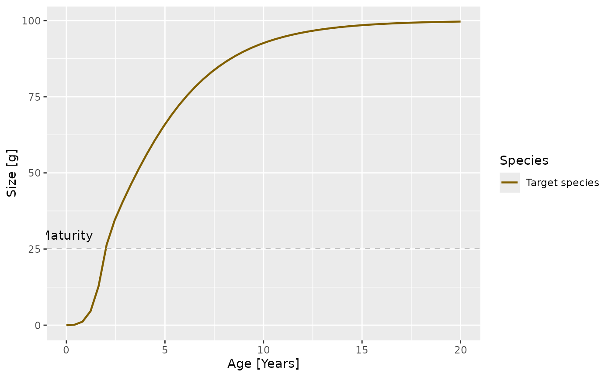
In the modified model it looks like
plotGrowthCurves(params_new_gamma)Exercise 7
What effect will this change in growth rate have on the slope of the juvenile spectrum? Will it be steeper or shallower? Make the plot of the spectrum to see.
Solution
The juvenile spectrum will be steeper because the slope is \(-\mu_0/g_0 - p\) and for smaller growth rate coefficient \(g_0\) this will be more negative.
nf <- melt(initialN(params))
nf_new_gamma <- melt(initialN(params_new_gamma))
nf$type <- "original"
nf_new_gamma$type <- "changed"
nf_combined <- rbind(nf, nf_new_gamma)
ggplot(nf_combined) +
geom_line(aes(x = w, y = value, colour = type)) +
scale_x_log10() +
scale_y_log10() +
labs(x = "Weight [g]",
y = "Number density [1/g]")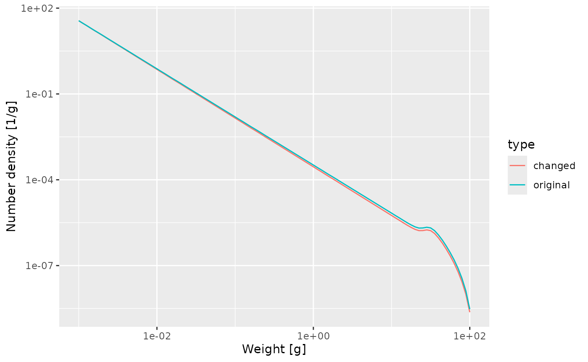
Feeding level
A predator will have a maximum intake rate. It will simply not be able to utilise food at a faster rate than its maximum intake rate. Of course in practice it will not feed at the maximum intake rate because of limited availability of prey. We describe this by the feeding level which is the proportion of its maximum intake rate at which the predator is actually taking in prey.
In our simple model this feeding level is constant.
plotFeedingLevel(params)In the model with the reduced search volume the feeding level will be lower
plotFeedingLevel(params_new_gamma)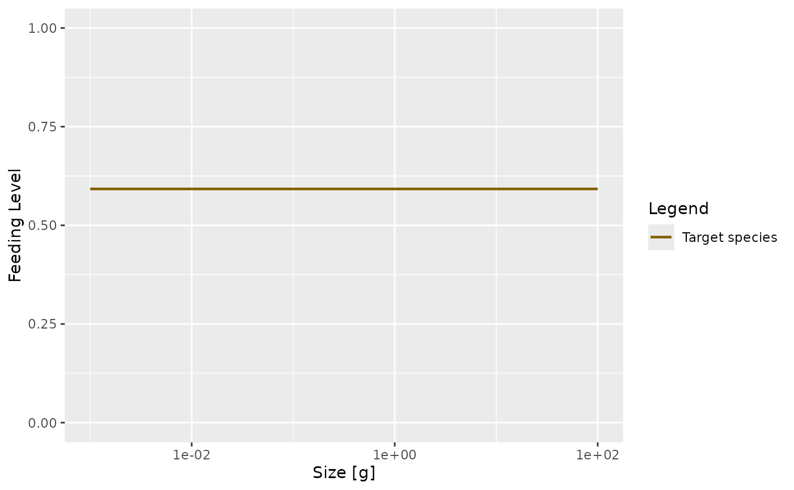
Our model is taking an allometric form for the maximum intake rate \(h(w)\) as a function of predator size \(w\): \(h(w) = h\ w^n\). The current value of the coefficient \(h\) is
species_params(params)$h## [1] 59.06914Mortality
Predation mortality
Of course growth of the predator is only one aspect of predation. The other is the death of the prey. Growth and mortality are coupled. Increased growth of one class of individuals will necessitate increased death of another. There is no free lunch.
Once we have specified the predation parameters, these parameters determine both the growth of predators but also the mortality rate of prey. So we don’t have to introduce new parameters for death from predation.
External mortality
In addition to mortality caused by predation from other fish, there
will be some mortality from other causes. This could be predation from
animals that we have not included in our model, like sea birds or
mammals, or it could be death from old age (senescent death) or disease.
Mizer allows setting of background death with
setExtMort().
Fishing mortality
The cause of mortality that is most under our control is mortality from fishing. You can see how fishing is set up in mizer at https://sizespectrum.org/mizer/reference/setFishing.html#setting-fishing. Here we only look at a simple example: we introduce fishing on our species only for fish above 30 grams. All fish greater than 30 grams will be exposed to the same fishing mortality. We call this kind of fishing selectivity “knife_edge” selectivity. Mizer can deal with more general selectivity curves, like sigmoidal or doubly sigmoidal.
params_fishing <- params
species_params(params_fishing)$sel_func <- "knife_edge"
species_params(params_fishing)$knife_edge_size <- 30We also need to specify the fishing effort and can then plot the resulting fishing mortality.
params_fishing <- setFishing(params_fishing, initial_effort = 1)
plotFMort(params_fishing)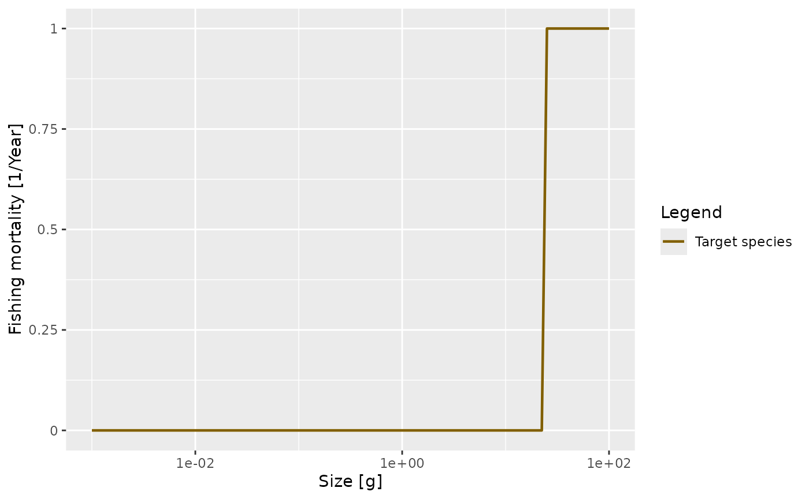
Outlook
The fish species we have studied had unlimited food and constant mortality. That of course is very unrealistic. In reality, food will become scarce when the fish population increases too much. Also the number of predators will grow. This will lead to interesting and important non-linear effects that we will study in the next tutorial.